Sites e landing pages que convertem
Rápidos, bonitos no celular e pensados para transformar visitas em contatos. Seu posicionamento claro desde a primeira tela.
- Design sob medida
- SEO e velocidade
- Integração com WhatsApp

Estúdio de crescimento digital para PMEs
A Femik coloca sua empresa no lugar certo do mercado digital: um site que vende, processos que rodam sozinhos e números que mostram o próximo passo — tudo integrado, sem você precisar montar um time de TI.
Quem somos
A Femik nasceu para resolver um problema comum: pequenas e médias empresas contratam um fornecedor para o site, outro para as redes, outro para planilhas — e nada conversa entre si.
Nós unimos presença, automação e dados num único método. Cada entrega se conecta à anterior, e você acompanha tudo por indicadores simples.
Depoimentos
Versão de protótipo: os depoimentos abaixo são exemplos e serão substituídos por relatos reais de clientes.
Exemplo“Antes a gente respondia orçamento no improviso. Hoje o formulário do site já gera a proposta e avisa a equipe no WhatsApp.”
Exemplo“O painel de vendas mudou nossas reuniões. Em vez de discutir opinião, olhamos o número e decidimos.”
Exemplo“Site novo, redes alinhadas e, pela primeira vez, sabemos de onde vem cada cliente.”
Conecte-se conosco
Conte em poucas linhas o que você precisa. Respondemos pelo WhatsApp com um diagnóstico inicial gratuito.